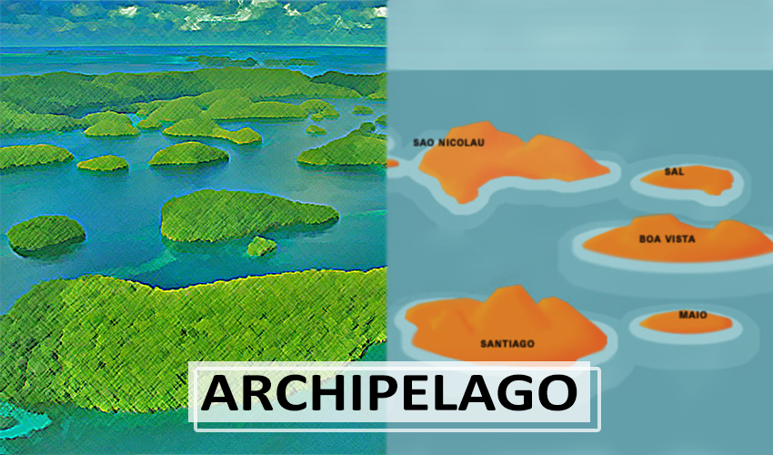
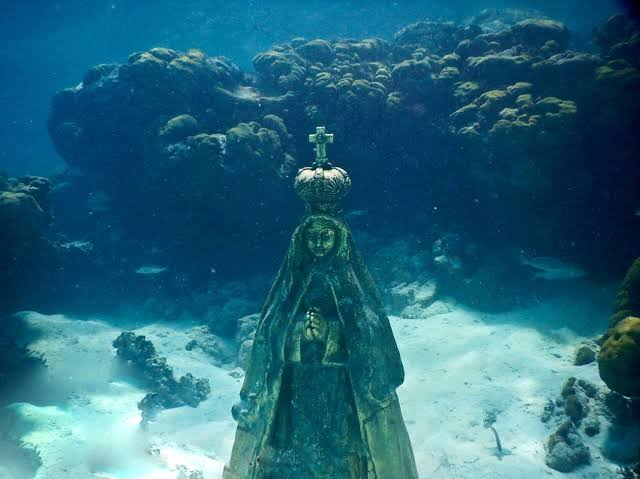
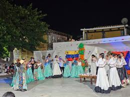
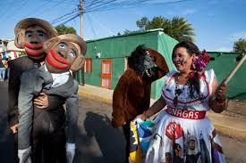
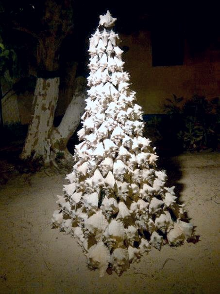
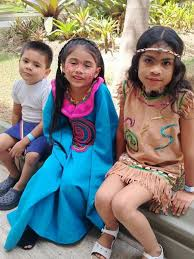
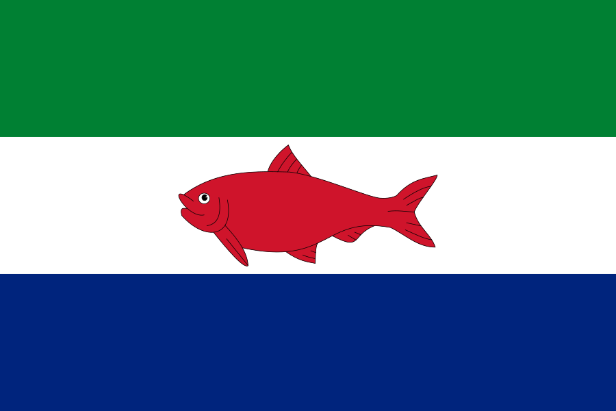

Descubre la vida,las tradiciones y la tecnologia han trasformado el dia a dia en las islas venezolanas.
tradiciones isleñas
Las tradiciones isleñas son el conjunto de costumbres, música, gastronomía, y rituales que definen la identidad de los habitantes de una isla. Debido al aislamiento geográfico, estas prácticas suelen ser muy arraigadas, fuertemente conectadas con el mar y el resultado de una rica mezcla entre culturas nativas, influencias coloniales y flujos migratorios.
Tradiciones y cultura
Fiestas Religiosas y Folclóricas

type "1"
La llegada de septiembre transforma por completo el archipiélago. La comunidad se organiza durante meses para rendirle homenaje a su patrona con una mezcla de júbilo, música y fe.
La Procesión Marítima: El evento central es una imponente procesión en botes. La imagen de la Virgen es embarcada y escoltada por decenas de peñeros (lanchas pesqueras típicas) decorados con flores, globos y banderas. La caravana viaja por las aguas turquesas del archipiélago, partiendo usualmente desde cayos como Crasquí hasta llegar a la isla principal, el Gran Roque. Durante el trayecto, los motores rugen en saludo, se lanzan cantos y se bendicen las aguas.
Misa y Fiesta Local: Al llegar al Gran Roque, la comunidad se reúne en la plaza del pueblo para la misa solemne. La velada se extiende con parrandas, música oriental (como galerones), bailes tradicionales y comida comunitaria compartida entre locales y turistas.
Los preparativos y el vestido de la Virgen
Semanas antes de la fiesta, la comunidad del Gran Roque se organiza meticulosamente. Uno de los secretos mejor guardados y más esperados por los habitantes es el diseño del vestido de la Virgen. Cada año, costureras locales o devotos que pagan promesas confeccionan un traje nuevo bordado a mano con detalles que hacen alusión al mar (anclas, redes de pesca, perlas o estrellas marinas). El día 7 de septiembre por la noche se realiza el cambio de vestimenta en un ambiente de íntima oración.
El Despertar con la "Misa de Aurora"
El propio 8 de septiembre la celebración empieza mucho antes de que salga el sol. A las 5:00 a.m. se celebra la tradicional Misa de Aurora en la iglesia del Gran Roque. Al salir de la iglesia, los roqueños saludan el amanecer cantando cumpleaños a "Vallita", acompañados por música de vientos, tambores y fuegos artificiales que resuenan en toda la costa, marcando el inicio oficial del día festivo.
La Caravana Azul: Decenas de botes, lanchas y catamaranes turísticos se suman detrás formando una gigantesca fila sobre el agua turquesa.
Los Saludos: Mientras navegan hacia los cayos cercanos (como Madrisquí o Francisquí), los capitanes hacen sonar las sirenas y los motores a máxima potencia como saludo de respeto. Los fieles lanzan flores blancas y globos al mar, pidiendo bendiciones para las futuras jornadas de pesca y protección contra las tormentas.

Danzas nacionales
Agrupaciones locales como las Danzas del Gran Roque preservan la cultura regional mediante bailes típicos y parodias que escenifican en carnaval, fin de año y fechas patronales
Carnavales: El Reinado de las Comparsas Marítimas
- Temáticas del Mar: Las danzas y comparsas no usan los típicos trajes de fantasía comunes; se disfrazan de elementos del ecosistema marino. Es normal ver coreografías completas de niños y jóvenes vestidos de corales, estrellas de mar, langostas o peñeros tradicionales.
- El Desfile en el Agua: Además del desfile callejero, la tradición dicta que las comparsas se trasladen a los botes. Las agrupaciones bailan a bordo de peñeros decorados que navegan cerca de la orilla de la playa del pueblo, mostrando sus trajes a los turistas y locales que los miran desde la costa.

Las Parodias de Fin de Año: "El Mono" y el Testamento
El fin de año en Los Roques tiene un tinte teatral y humorístico muy fuerte, donde la comunidad aprovecha para reírse de sí misma mediante parodias escenificadas por los grupos culturales.
- La Danza del Mono: Es una variante adaptada de la tradición oriental. Una persona disfrazada de mono lidera una fila donde se van sumando los habitantes del pueblo agarrados por la cintura. El "mono" guía al grupo bailando a ritmo de parrandas y, de forma jocosa, "castiga" con una rama flexible a los que pierden el paso o intentan salirse de la fila.
- El Testamento del Año Viejo y las Parodias Locales: Los jóvenes del pueblo preparan pequeñas obras de teatro callejero o parodias que imitan de forma exagerada y cómica los chismes, anécdotas o eventos divertidos que le ocurrieron a los vecinos del pueblo durante el año. Es una forma de catarsis comunitaria para despedir el año con risas.

El Árbol de Navidad de Botutos
En las islas de las Dependencias Federales, la falta de pinos dio paso a una maravillosa muestra de identidad artesanal: los árboles de Navidad hechos con conchas de botuto (el caracol marino gigante de la zona).
- Los pescadores acumulaban las conchas vacías tras extraer el alimento y las apilaban de forma piramidal para simular el árbol.
- Para coronarlo, en la cúspide se coloca una estrella de mar disecada. Hoy en día, debido a las regulaciones ambientales para proteger al botuto, es una tradición protegida en las memorias de los pueblos y museos locales, usando estructuras artificiales decoradas con conchas antiguas.

Origen de estas tradiciones
La identidad cultural de las Dependencias Federales venezolanas se fundamenta en un profundo sincretismo entre la devoción mística y la rigurosa cotidianidad de la supervivencia en el océano, una herencia directa de los antiguos navegantes indígenas y de las familias de pescadores provenientes de la Isla de Margarita y las costas orientales. Al tratarse de comunidades aisladas en la inmensidad del Mar Caribe, la vida de sus habitantes gira de forma absoluta en torno al mar como su principal proveedor de sustento, pero también como una fuerza de la naturaleza digna de respeto y temor. Por esta razón, todas sus expresiones tradicionales —que abarcan desde las fastuosas procesiones florales a bordo de peñeros y la creación de santuarios submarinos, hasta rituales como la quema de Judas en el agua, canciones improvisadas en galerones y artesanías elaboradas con elementos recolectados de los arrecifes— operan como rituales colectivos para agradecer la abundancia de la pesca, implorar protección divina frente a los naufragios o tormentas, y estrechar los lazos de hermandad y pertenencia en un entorno donde el horizonte marino lo define todo.


Su importancia
Estas tradiciones son fundamentales porque representan el áncora de identidad, memoria y cohesión social para comunidades que viven en un aislamiento geográfico extremo. En medio de la inmensidad del Mar Caribe, donde las Dependencias Federales carecen de las estructuras urbanas del continente, estas costumbres transforman el espacio marítimo en un hogar con historia compartida, reforzando la solidaridad y la confianza mutua entre los pescadores, cualidades que son vitales para apoyarse en las duras y peligrosas jornadas en alta mar. Además, en una época marcada por el auge del turismo de masas, estas celebraciones actúan como un escudo cultural indispensable; no solo preservan el folclore y los saberes ancestrales de la navegación oriental frente a la influencia externa, sino que añaden un valor humano y auténtico al paisaje natural, recordándole tanto a los locales como a los visitantes que estas islas no son solo playas de catálogo, sino territorios vivos con alma, fe y raíces profundas.
¿Cuantas islas tienen las dependencias federales?
Las Dependencias Federales de Venezuela abarcan un total de 311 islas, cayos e islotes, los cuales están geográficamente organizados en 11 grupos o archipiélagos principales administrados directamente por el gobierno central.
- Archipiélago de Los Roques
- Archipiélago de La Orchila
- Archipiélago de Las Aves
- Archipiélago Los Monjes
- Archipiélago Los Frailes
- Archipiélago Los Hermanos
- Isla La Tortuga
- Isla La Blanquilla
- Isla La Sola
- Isla de Aves
- Isla de Patos
-